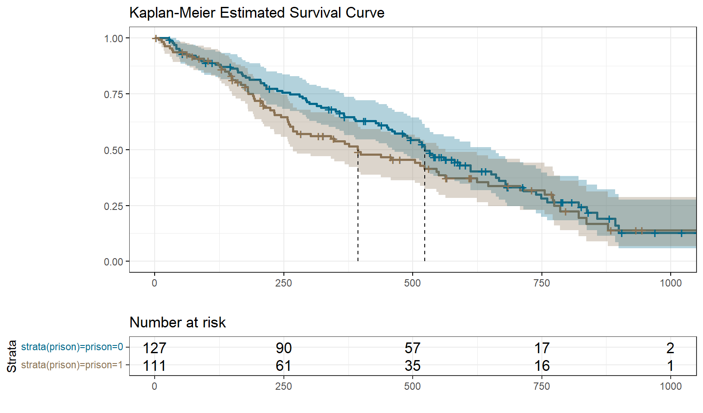

Prison Addicts
1.1 Basic Exploration
I can’t seem to find any documentation explaining the experiment this data corresponds to. So let’s see if we can figure out the gist of it.
| skim_type | skim_variable | n_missing | numeric.hist |
|---|---|---|---|
| numeric | id | 0 | ▇▇▆▇▇ |
| numeric | clinic | 0 | ▇▁▁▁▃ |
| numeric | status | 0 | ▅▁▁▁▇ |
| numeric | days_survival | 0 | ▇▅▆▃▁ |
| numeric | prison | 0 | ▇▁▁▁▇ |
| numeric | dose | 0 | ▁▇▇▃▁ |
So it looks like we’ve got the following:
ID is just your basic identifier;
Clinic is a cluster variable. But there’s only two clusters, so not really enough to do a frailty model since that would only be two data points with which to estimate the sigma between clusters. Could be interesting to try out a stratified Cox though, or at least do those tests Singer and Willett mention to explore whether the clusters have different baselines;
Status is the event column;
Prison is ambiguous without documentation: are these people who are currently in prison, or people who have been in prison in the past? Either way, it will be a predictor to explore;
Dose is I guess the treatment. It is continuous, which will be fun.
I’m curious to explore the values within the Dose column a bit more:
Pretty varied, it seems.
Based on these
Ok. So now we can do some basic exploratory stuff with the whole sample. Singer and Willett recommend starting with the Kaplan Meier, Cumulative Hazard, and Kernel-Smoothed Hazard, so that’s what we’ll do.
We’ll use the canonical survival package, as well as the helpful survminer package for visualizations. The workflow starts with a weird first step: we need to create a ‘survival object’ of the type that the functions of the survival package can understand. This just takes the time_to_event and status columns of your dataset and turns them into a single column, where a number alone is a time-to-event, and a number with a plus sign beside it is time-to-censored. This is just the way they’ve decided to do things. Then we can use this ‘survival object’ to get the various curves we need.
So here we go:
# Create survival object
surv_object <- Surv(dat$days_survival, dat$status)
# Fit the Kaplan-Meier curve
km.full.sample <- survfit(surv_object ~ 1, data = dat)
# Plot the Kaplan-Meier curve
km_full_sample_plot <- survminer::ggsurvplot(
fit = km.full.sample,
conf.int = TRUE,
risk.table = TRUE,
surv.median.line = "v",
linetype = 1,
legend = "none",
palette = c("cadetblue4"),
title = "Kaplan-Meier Estimated Survival Curve",
xlab = "",
ylab = "",
ggtheme = theme_bw()
)
# Plot the Negative-Log cumulative hazard
cumhaz_full_sample_plot <- survminer::ggsurvplot(
fit = km.full.sample,
conf.int = TRUE,
linetype = 1,
legend = "none",
palette = c("burlywood4"),
title = "Negative Log Cumulative Hazard",
xlab = "",
ylab = "",
ggtheme = theme_bw(),
fun = "cumhaz"
)
# Plot the kernel-smoothed hazard
kernel_smoothed_full_sample <- kernel_smoothed_hazard(width=60, time=dat$days_survival * 2, survive=dat$status + 1) %>%
ggplot(aes(x = x, y = y)) +
geom_line(colour = "aquamarine4", size = 2, alpha = .8) +
geom_line(colour = "white", size = .2) +
ggtitle("Kernel-Smoothed Approximation of Hazard Function") +
xlab("Days After Completing amplify") +
ylab("Smoothed Hazard") +
theme_bw()


Things are looking pretty consistent here. You have the typical thing of hazard being low at first but then increasing at psychologically-salient anniversaries, IE the two-month mark and the one-year mark. Things also seem to really take off at the 500 day mark as well.
Based on the data available, there are a few things I’m curious about:
- How does time-to-event vary with prison status?
- How does time-to-event vary with dosage amount?
- Does the relationship between dosage amount and time-to-event vary in prison status? In other words, is there an interaction between dosage and prison status?
- Is the proportional hazards assumption justified given the possibility of different baseline hazards across clinics?
Let’s explore each of these questions.
1.2 How does time-to-event vary with prison status?
For starters, we can plot the cumulative hazard curves for the two groups in isolation. If the cumulative hazard curves aren’t generally parallel on the log scale then when it comes time to model we should probably think about doing one of the things Singer and Willett suggest we do when we seem to have different baselines, between strata, IE either:
- Do a stratified Cox regression;
- Do time-varying effects.
So let’s plot the stratified cumulative hazard curves:
# Fit the new stratified Kaplan-Meier curve.
# We can reuse the same survival object from above.
km.prison.strat <- survfit(surv_object ~ 1 + strata(prison), data = dat)
# Plot the Kaplan-Meier curve
cumhaz_prison_strat <- survminer::ggsurvplot(
fit = km.prison.strat,
conf.int = TRUE,
risk.table = TRUE,
surv.median.line = "v",
linetype = 1,
legend = "bottom",
palette = c("cadetblue4", "burlywood4"),
xlab = "",
ylab = "",
ggtheme = theme_bw()
)
# Call the plot
cumhaz_prison_strat
It looks like being in prison does influence time to event, but not in a consistent way over time. But remember, what we’re worried about is whether log cumulative hazard. I’m not sure how to plot this yet. So actually, the fact that the difference grows over time could be an indication that the proportional hazard assumption does hold. I should figure out how to plot log cumulative hazard.
Another way of investigating the validity of the proportional hazards assumption for a particular predictor is to look at the Schoenfeld residuals of a cox regression with only prison as a predictor:
# Fit a Cox regression
cox.prison.only <- coxph(surv_object ~ 1 + prison, data = dat)
# Get a zph object, which takes a Cox model object and returnslots of nice diagnostic information specifically about the proportional hazards assumption of that Cox model
zph_object_cox_prison <- cox.zph(cox.prison.only)
# Plot the Schoenfeld residuals with Survminer
survminer::ggcoxzph(zph_object_cox_prison)
This all suggests that the effect of people in prison might vary over time a bit, but the Schoenfeld p-value isn’t below .05, so I guess we are justified in not worrying about that. varies over time and is not amenable to the proportional hazards assumption.
If instead we had found that prison varies a bunch over time then we could do a stratified regression by prison. But Singer and Willett point out that if we do this then we won’t get a parameter estimate for the influence of prison, and that’s a parameter estimate it would be nice to have. So instead we can relax the proportional hazards assumption by interacting prison with time. We’re not gonna do this now because our Schoenfeld residuals say we don’t ahve to but the authors of the Survival package have written some nice documentation about precisely how to do this.